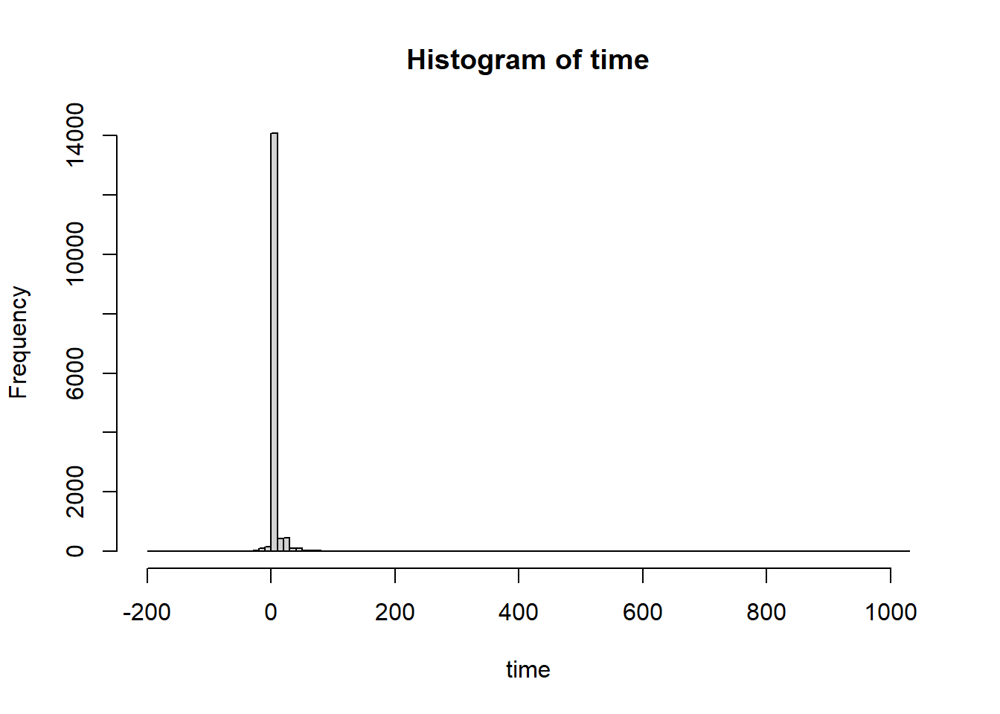
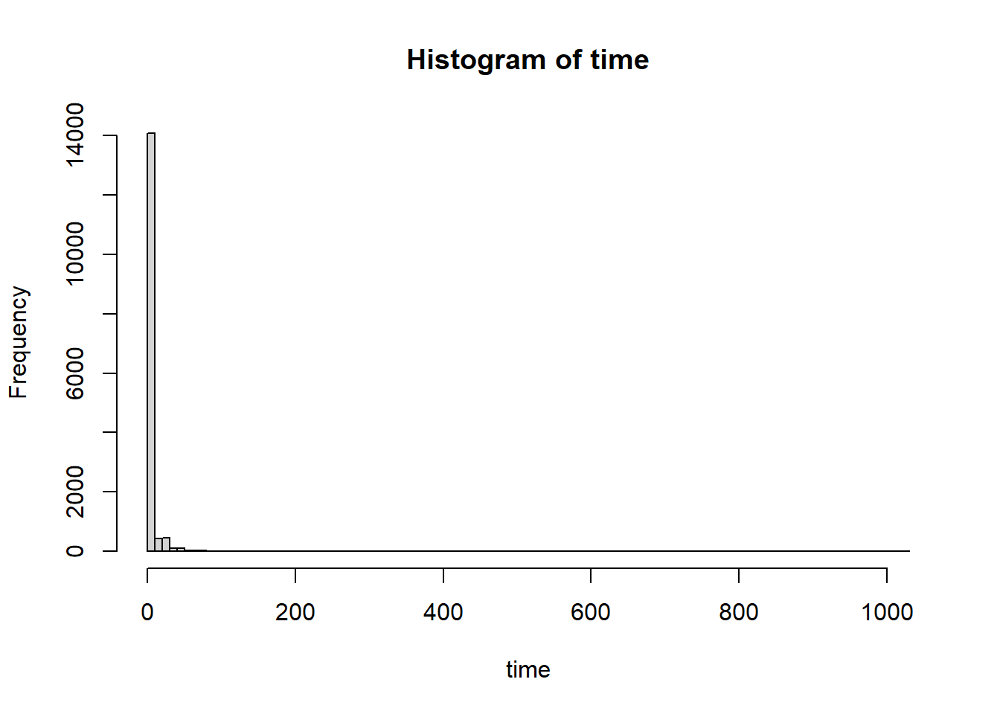
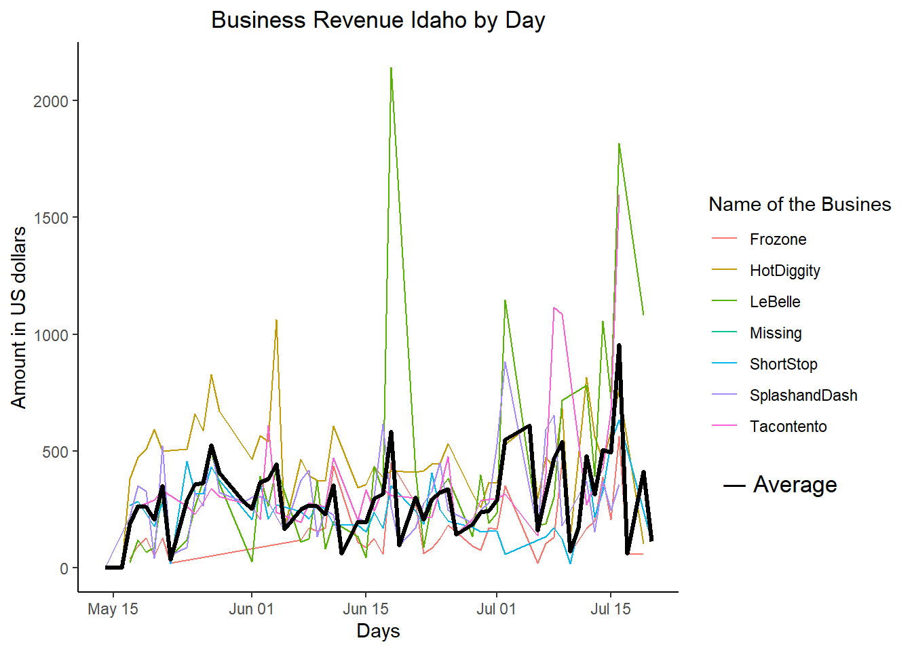
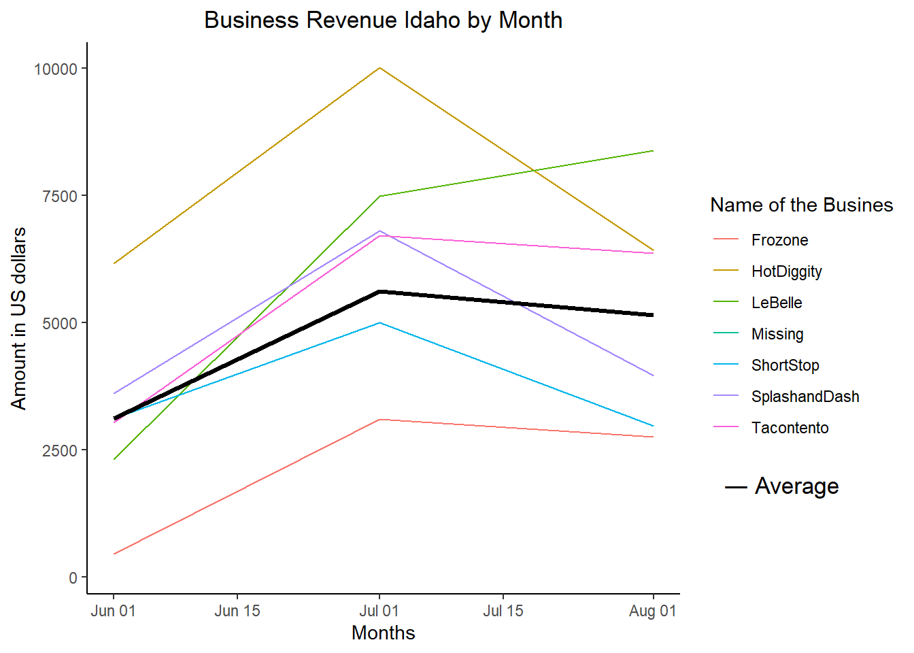
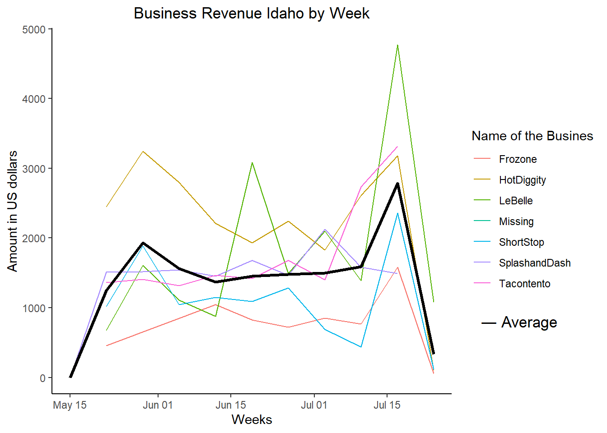
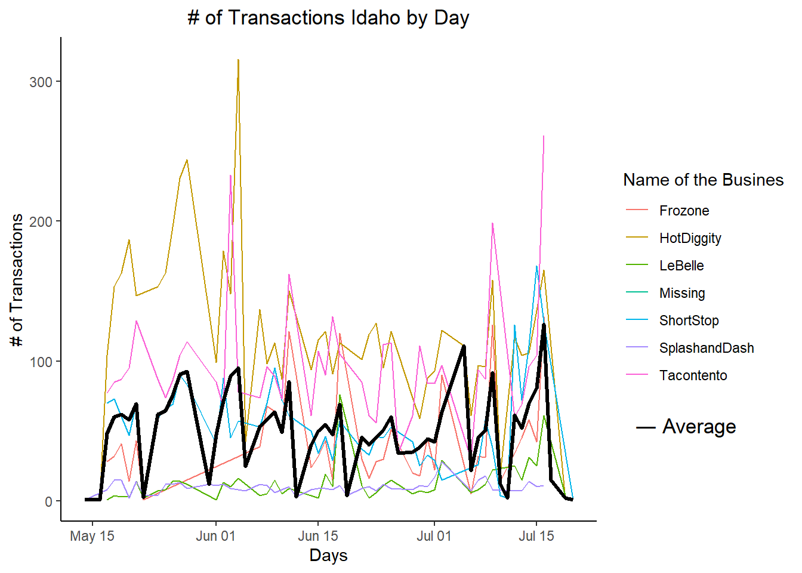
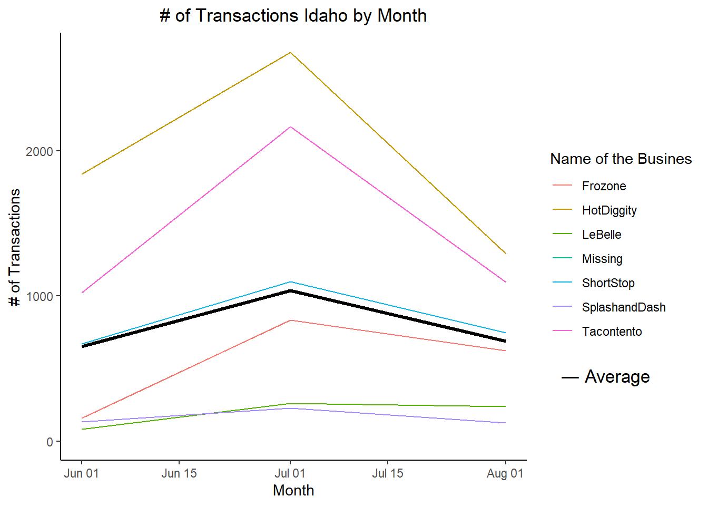
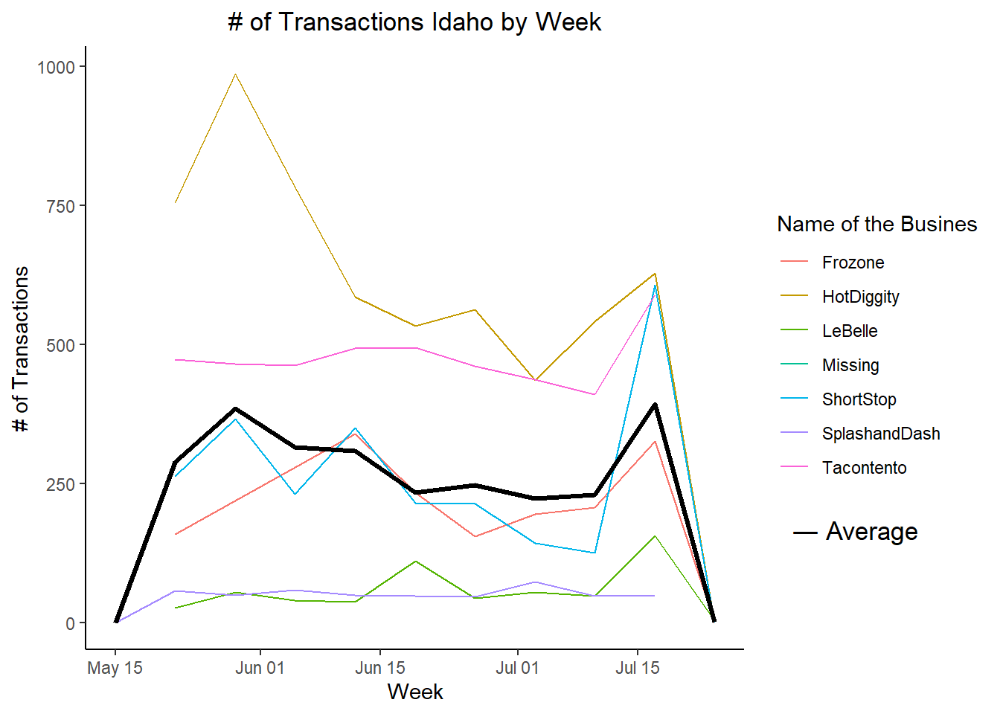
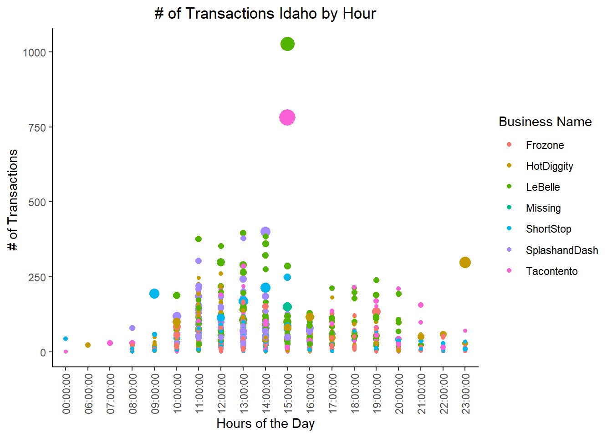

Code
library(tidyverse)
library(lubridate)
library(downloader)We have transaction data for a few Rexburg, Idaho businesses that have been in operation for three months. Each of these companies has come to your investment company for a loan to expand their business. Your boss has asked you to go through the transactions for each business and provide daily, weekly, and monthly gross revenue summaries and comparisons.
A strong customer base is preferred over companies whose revenue comes from just a few big purchases/customers. Thus, customer traffic (number of transactions) will also be helpful in deciding which company to choose.
Your boss would like a short write-up with tables and visualizations that help with the decision of which company did the best over the three-month period. You will also need to provide a short paragraph with your recommendation after building your analysis.
This course only looks at understanding and visualizing recorded time series data. If you would like to learn more about forecasting I would recommend Forecasting: Principles and Practice and for a quick introduction read Exploring and Visualizing Time Series.
library(tidyverse)
library(lubridate)
library(downloader)From https://byuistats.github.io/M335/data/sales.csv and format it for visualization and analysis.
Name Type Time Amount
Length:15656 Length:15656 Length:15656 Min. :-194.500
Class :character Class :character Class :character 1st Qu.: 2.500
Mode :character Mode :character Mode :character Median : 3.000
Mean : 5.294
3rd Qu.: 4.500
Max. :1026.000 'data.frame': 15656 obs. of 4 variables:
$ Name : chr "Tacontento" "Tacontento" "Tacontento" "Tacontento" ...
$ Type : chr "Food(prepared)" "Food(prepared)" "Food(prepared)" "Food(prepared)" ...
$ Time : chr "2016-05-16T19:01:00Z" "2016-05-16T19:01:00Z" "2016-05-16T19:04:00Z" "2016-05-16T19:04:00Z" ...
$ Amount: num 3 1.5 3 3 1.5 1 3 3 1.5 3 ...
integer(0)[1] 0 Name Type Time Amount
0 0 0 17 
In a .qmd file create visualizations that show gross revenue over time for each company. Consider whether to aggregate at the daily, the weekly, or monthly level - or all 3



Consider whether to aggregate at the daily, the weekly, or monthly level - or all 3
#| echo: false
p<- ggplot(data = df2_day)+
geom_line(aes(x=group_day,y=Trasaction_N, color=Name))+
stat_summary(aes(x=group_day,y=Trasaction_N,colour="mean",group=1), fun.y=mean, geom="line", colour="black",linetype = "solid", size = 1.1)+
theme_classic()+
ylab("# of Transactions")+
xlab("Days")+
ggtitle("# of Transactions Idaho by Day")+ theme(plot.title = element_text(hjust = 0.5))+
guides(color=guide_legend("Name of the Busines"))
p+ labs(tag = " ― Average")+
coord_cartesian(clip = "off") +
theme(plot.tag.position = c(.86, .25))
p1<-ggplot(data = df2_month)+
geom_line(aes(x=group_month,y=Trasaction_N, color=Name))+
stat_summary(aes(x=group_month,y=Trasaction_N,colour="mean",group=1), fun.y=mean, geom="line", colour="black",linetype = "solid", size = 1.1)+
theme_classic()+
ylab("# of Transactions")+
xlab("Month")+
ggtitle("# of Transactions Idaho by Month")+ theme(plot.title = element_text(hjust = 0.5))+
guides(color=guide_legend("Name of the Busines"))
p1+ labs(tag = " ― Average")+
coord_cartesian(clip = "off") +
theme(plot.tag.position = c(.86, .25))
p2<-ggplot(data = df2_week)+
geom_line(aes(x= group_week, y=Trasaction_N, color=Name))+
stat_summary(aes(x=group_week, y=Trasaction_N, colour="mean",group=1), fun.y=mean, geom="line", colour="black",linetype = "solid", size = 1.1)+
theme_classic()+
ylab("# of Transactions")+
xlab("Week")+
ggtitle("# of Transactions Idaho by Week")+ theme(plot.title = element_text(hjust = 0.5))+
guides(color=guide_legend("Name of the Busines"))
p2+ labs(tag = " ― Average")+
coord_cartesian(clip = "off") +
theme(plot.tag.position = c(.86, .25))
Provide a visualization that gives insight into hours of operation for each company.
#| echo: false
df2<- mutate(df1, group_hour= ceiling_date(time_MST, "hour"))
df2<-df2 %>%
group_by(group_hour,Name)%>%
summarize(Trasaction_N = n(),
amount = sum(Amount),
average=mean(Amount))
df2$hours <- format(df2$group_hour,"%H:%M:%S")
ggplot(data=df2)+
geom_point(aes(x=hours, y=amount, size=average, color=Name))+
theme_classic()+
ylab("# of Transactions ")+
xlab("Hours of the Day")+
ggtitle("# of Transactions Idaho by Hour")+ theme(plot.title = element_text(hjust = 0.5))+
labs(color="Business Name")+
guides(size="none")+
theme(axis.text.x = element_text(angle = 90, vjust = 0.5, hjust=1)
) 
Which company do you think performed the best over the three months? Why?
The best performing company is HotDiggity in terms of revenue by month looking at that graph. Of course, we do not the expenses and so we do not have the net income or profit margin to compare each company. This is just looking at this basic observation.
It it interesting to see that tacotento has trasaction with the highest level of revenue at 14:00 hours. Maybe it is because people love taco for lunch, but overall Tacotento is just above average.
Speaking about operation, it is clear that most of the operation happens between 10-3pm and 5 to 9 where those companies need to have workers. It would be interesting to see if those business are close together. If so, they may compete for the same workers and maybe they have to offer additional benefit or pay. Further research will be needed.